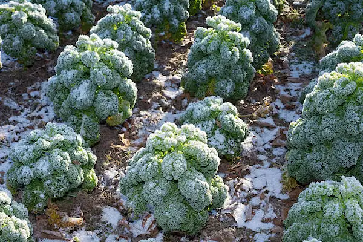

Frost Protection Method: Covering Plants
One common way to protect vegetable plants from frost is by covering them. Gardeners often use materials like blankets, sheets, or frost cloths to trap heat from the soil and keep plants warmer overnight. This simple barrier helps prevent ice from forming directly on the leaves, reducing damage during cold temperatures.
Frost Protection Methods: Watering
Another effective method is watering the soil before a frost. Moist soil holds heat better than dry soil and can release warmth throughout the night, helping to keep plants slightly warmer. This added heat can make a big difference in preventing frost damage, especially during short cold snaps.